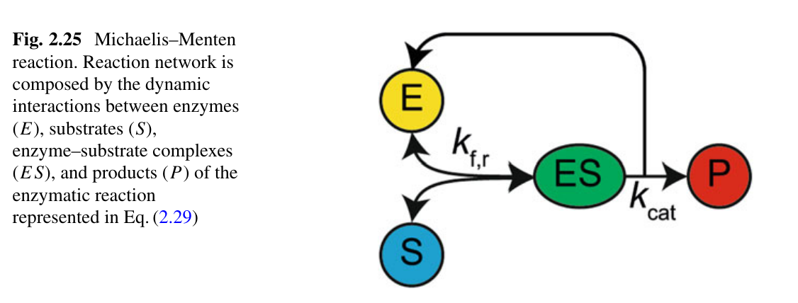

Redes Regulatorias y Microambiente
Cómo dos cosas que cambian a velocidades muy distintas —el ambiente de un tejido y el estado de sus células— se pueden modelar juntas sin morir en el intento. Un recorrido guiado por la Sección 2.9, con gráficos interactivos y explicaciones en lenguaje sencillo.
El Problema: Dos Relojes que Corren a Velocidades Distintas
Dos variables, dos escalas de tiempo, un mismo tejido
¿Qué estamos modelando?
Imagina un tejido biológico donde conviven dos cosas:
- $S(t)$: una condición del microambiente que cambia lento (días a semanas). Por ejemplo, el nivel de oxígeno, la acidez o la concentración de una señal inflamatoria.
- $X(t)$: el fenotipo celular, que cambia rápido (minutos a horas). Por ejemplo, si una célula está proliferando, durmiendo o secretando algo.
Los dos se afectan mutuamente:
Es decir: el ambiente cambia por culpa de las células, y las células cambian por culpa del ambiente. Un círculo cerrado.
Tienes dos cosas que se empujan una a la otra, pero una es lenta y otra es rápida. Si intentas simular las dos al mismo tiempo con el mismo paso de tiempo, la lenta necesitaría millones de pasos para avanzar un poquito, mientras la rápida ya habría terminado hace rato.
Pregunta central: ¿cómo modelar este sistema sin morir de aburrimiento computacional?
Piensa en un termostato. La temperatura de una habitación cambia lentamente (minutos). El calentador, en cambio, se prende y apaga en cuestión de segundos. Si quisieras simular los dos con el mismo paso de tiempo necesitarías avanzar por milisegundos para ver cómo cambia la temperatura por horas.
Pero hay un atajo: como el calentador es tan rápido, siempre está en su estado de equilibrio (encendido o apagado según la temperatura actual). No necesitas resolver sus transitorios. Esa es exactamente la idea de QSSA.

La Herramienta: Hipótesis de Cuasi-Estado-Estacionario (QSSA)
Cómo "congelar" la parte rápida para simplificar la lenta
La idea matemática
Supongamos que $X$ evoluciona en una escala de tiempo $t$ mucho más rápida que $S$ en su escala $\tau$, con $t \ll \tau$.
Entonces, desde el punto de vista de $S$, la variable $X$ ya "llegó a su destino". Eso significa:
Es decir, $X$ deja de ser una variable dinámica y se vuelve una fórmula algebraica de $S$. El sistema completo se reduce a una sola ecuación para $S$:
En lugar de resolver dos ecuaciones acopladas, resolvemos una sola. Cada vez que necesitamos saber cuánto vale $X$, lo calculamos con una fórmula que depende de $S$. Pasamos de un sistema "complicado" a uno "fácil", a cambio de un pequeño error que veremos enseguida.
Veamos QSSA Funcionando en una Simulación
Comprobación numérica con un sistema de dos escalas
El sistema de prueba
Usamos un ejemplo simple para ver qué tan buena es la aproximación:
El parámetro $\varepsilon$ controla la separación de escalas. Cuando $\varepsilon \to 0$, la variable $X$ se vuelve casi instantánea y la curva real se pega a la curva QSSA ($X_{ss}(S) = S$).
- $\varepsilon$ grande (por ejemplo 1.0): las dos variables van a la misma velocidad. QSSA no funciona.
- $\varepsilon$ pequeño (por ejemplo 0.005): una variable va mucho más rápido que la otra. QSSA funciona perfecto.
El Ejemplo Clásico: Briggs-Haldane (Michaelis-Menten)
Cómo una enzima convierte un sustrato en producto
La reacción bioquímica
Una enzima $E$ se une a un sustrato $S$ para formar un complejo $ES$, que luego libera el producto $P$ y la enzima queda libre:
Las ecuaciones completas (un sistema de 4 dimensiones) son:
Imagina una fábrica con $E$ obreros (enzimas) y una banda transportadora llena de piezas $S$ (sustrato). Los obreros toman piezas ($ES$), las transforman, y sueltan el producto terminado $P$.
Como los obreros son rápidos comparados con la cantidad de piezas que va pasando, el número de obreros ocupados se ajusta instantáneamente. No hace falta modelar cada segundo lo que hace cada obrero.
La reducción mágica: de 4D a 1D
Dos atajos poderosos:
- Conservación de enzima: $[E] + [ES] = [E]_0$ (la enzima siempre está, ocupada o libre).
- QSSA sobre $[ES]$: como el complejo se forma y se rompe muy rápido, $d[ES]/dt = 0$.
Definiendo la constante de Michaelis $K_M = (k_r + k_{cat})/k_f$, queda una sola ecuación:
Resultado clave: pasamos de un sistema 4D a una sola EDO. ¡Sin perder lo esencial!
El término $K_M$ es como un "umbral de hambre": cuando $[S] \ll K_M$, los obreros están casi todos libres y la velocidad es proporcional a la cantidad de piezas. Cuando $[S] \gg K_M$, todos los obreros están ocupados y la velocidad alcanza un máximo (saturación).
¿Qué Tan Buena Es la Aproximación QSSA en Briggs-Haldane?
Comparamos la solución exacta (4D) con la aproximada (1D)
La aproximación QSSA funciona bien cuando se cumple la "condición de QSSA": que haya mucha más pieza que obreros. Es decir, $[S]_0 \gg [E]_0$.
- Si hay muchos obreros y pocas piezas → QSSA falla, porque el complejo $ES$ ya no puede considerarse en equilibrio instantáneo.
- Si hay pocos obreros y muchas piezas → QSSA funciona perfecto (que es lo típico en biología celular).
Cuando el Sistema Tiene "Memoria": Dinámica Biestable y PWA
Interruptores biológicos que recuerdan de dónde vienen
Los dos estados del sistema
Imagina que el fenotipo $E$ puede estar en dos estados (por ejemplo, célula "sana" o "activada"), y que el estímulo $S$ decide cuál:
- Si $S < S^-$: solo puede existir el estado bajo ($E_{low}$).
- Si $S > S^+$: solo puede existir el estado alto ($E_{high}$).
- Si $S$ está entre $S^-$ y $S^+$: los dos son posibles. ¿Cuál gana? Depende de cómo llegaste: hay memoria. A eso le llamamos histéresis.
Piensa en un interruptor de esos que hacen clic. Si lo pones en el punto medio, no se queda ahí: se va a un lado o al otro, según de dónde venga. Esa es la idea de la histéresis: hay dos posiciones estables, y el punto medio es inestable.
El sistema PWA (Piecewise-Affine, "afín a trozos") es una forma de escribir esa idea con cuatro reglas muy simples, sin resolver un modelo complicado.
La aproximación PWA
En vez de resolver el sistema completo, describimos la respuesta con una función "afín a trozos" (Ec. 2.31 del texto):
Idea clave: la memoria del sistema se guarda en el valor previo $E_{prev}$.
- No hace falta resolver un sistema de ecuaciones diferenciales complicado.
- La respuesta biestable se reduce a 4 reglas algebraicas sencillas + una variable discreta de memoria.
- Esto es mucho más rápido de simular y captura lo esencial.
Dibujemos la Curva de Histéresis
La "memoria" del sistema, en una sola imagen
- Si el estímulo $S$ va subiendo desde 0, seguimos la curva roja.
- Si el estímulo $S$ va bajando desde 2, seguimos la curva azul.
- En la zona amarilla (entre $S^-$ y $S^+$) las dos trayectorias no coinciden: el mismo valor de $S$ puede dar dos valores distintos de $E$. Esa es la histéresis.
- La zona amarilla es la región de histéresis. Cuanto más ancha, mayor la memoria del sistema.
- Si intentas hacer $S^- = S^+$ verás que el rectángulo se cierra y se pierde la histéresis: el sistema se vuelve un simple interruptor sin memoria.
El Sistema Híbrido: Ahora las Dos Escalas se Hablan
El fenotipo empuja al ambiente, y el ambiente empuja al fenotipo
El acoplamiento
Ya tenemos por un lado la respuesta rápida $E(\tau)$ (PWA) y por otro el ambiente lento $S(\tau)$. Los conectamos: el estímulo lento depende del fenotipo actual:
Usamos el modelo lineal más simple posible (didáctico):
Los valores $S_{ss}^{low}$ y $S_{ss}^{high}$ son los puntos focales: hacia dónde "querría ir" el ambiente si el fenotipo no cambiara.
Imagina que el fenotipo es un auto y el ambiente es el destino. Si el fenotipo está en modo "low", el ambiente se dirige al punto focal $S_{ss}^{low}$. Si está en "high", se dirige a $S_{ss}^{high}$.
Pero el fenotipo a su vez cambia según el ambiente. Es decir: el auto decide su dirección según dónde esté, y dónde está depende de la dirección. Un verdadero acoplamiento.
Es como un termostato con dos puntos de consigna: uno bajo (calefacción casi apagada) y uno alto (calefacción a tope). La temperatura se mueve hacia uno u otro según qué modo esté activo, y el modo activo depende de la temperatura actual.
Este acoplamiento, según cómo se elijan los valores, da cuatro tipos de comportamiento: homeostasis, inflamación crónica, biestabilidad u oscilaciones. Los veremos enseguida.
Juega con el Sistema Completo
Mueve los deslizadores y observa hacia dónde va el sistema
- Líneas gris punteadas ($S^- = 0.8$ y $S^+ = 1.2$): los umbrales de histéresis.
- Línea azul punteada ($S_{ss}^{low}$): destino del ambiente cuando el fenotipo es "low".
- Línea roja punteada ($S_{ss}^{high}$): destino cuando el fenotipo es "high".
- Línea verde continua: la trayectoria real de $S(\tau)$.
Prueba poner $S_0$ en 0.5 y $E_0$ en "low". Verás que $S$ sube hacia $S_{ss}^{high}$ si cruza el umbral $S^+$, o se queda cerca de $S_{ss}^{low}$ si no lo cruza. La historia del sistema (de dónde vienes) determina el destino final.
Cuatro Futuros Posibles: el Análisis de Puntos Focales
Según dónde apunten los focos, el sistema se comporta distinto
La tabla clave
La posición de los puntos focales $S_{ss}^{low}$ y $S_{ss}^{high}$ respecto a los umbrales $S^-$ y $S^+$ determina el comportamiento a largo plazo (Fig. 2.26 del texto):
| # | Comportamiento | Condición |
|---|---|---|
| (i) | Homeostasis | $S_{ss}^{low} \le S^+$ y $S_{ss}^{high} < S^-$ |
| (ii) | Inflamación crónica | $S_{ss}^{low} > S^+$ y $S_{ss}^{high} \ge S^-$ |
| (iii) | Biestabilidad | $S_{ss}^{low} \le S^+$ pero $S_{ss}^{high} \ge S^-$ |
| (iv) | Oscilaciones | $S_{ss}^{low} > S^+$ y $S_{ss}^{high} < S^-$ |
- (i) Homeostasis: el sistema siempre termina en el estado bajo. Es estable y vuelve solo. Es el caso "sano".
- (ii) Inflamación crónica: el sistema siempre termina en el estado alto. Se quedó "pegado" en un modo patológico.
- (iii) Biestabilidad: los dos finales son posibles. Depende de la historia. Es lo más peligroso: una vez que entras en el estado malo, ya no sales.
- (iv) Oscilaciones: el sistema no se queda en ningún lado: rebota entre los dos estados, como un ciclo infinito.
Cada Escenario, una Historia Clínica
Elige un escenario y experimenta con él
- En (iii) Biestabilidad: empieza con $E_0$ = low y luego con $E_0$ = high, con el mismo $S_0$. Verás que el destino final cambia. Esa es la memoria del sistema.
- En (iv) Oscilaciones: observa cómo el sistema nunca se queda quieto, va y viene.
- En (i) vs (ii): el sistema siempre termina en el mismo estado, sin importar dónde empieces. El único cambio es cuál estado.
Un Mapa para Navegar el Espacio de Parámetros
Los cuatro comportamientos, dibujados en un solo plano
¿Cómo leer este mapa?
Barremos el plano $(S_{ss}^{low},\ S_{ss}^{high})$ y coloreamos cada punto según qué comportamiento produce. Las líneas gris punteadas marcan los umbrales $S^- = 0.8$ y $S^+ = 1.2$.
- Región azul (abajo-izquierda): homeostasis — todo vuelve al estado bajo.
- Región roja (abajo-derecha): inflamación crónica — todo se queda en el estado alto.
- Región amarilla (arriba-izquierda): biestabilidad — dos futuros posibles.
- Región verde (arriba-derecha): oscilaciones — el sistema nunca se estabiliza.
Mover los puntos focales es como mover una ficha en este mapa: cambiar de región significa cambiar radicalmente el destino del sistema.
Conclusiones y Observaciones Finales
Lo que nos llevamos del recorrido
Síntesis en cinco puntos
- QSSA permite colapsar sistemas multi-escala en modelos algebraicos de baja dimensión. Es la herramienta matemática que conecta lo rápido (biología molecular) con lo lento (fisiología tisular).
- Briggs-Haldane es el ejemplo canónico: un sistema 4D se reduce a una sola EDO sin pérdida cualitativa importante.
- La aproximación PWA evita resolver diagramas de bifurcación completos. Codifica la respuesta biestable con 4 reglas algebraicas simples y una memoria discreta.
- El análisis de puntos focales revela que la posición de $S_{ss}^{low}$ y $S_{ss}^{high}$ frente a $S^-$ y $S^+$ determina cuatro comportamientos clínicamente relevantes.
- Relevancia clínica: enfermedades degenerativas crónicas frecuentemente emergen de aberraciones en la interacción fenotipo-microambiente.
Cuando dos cosas se afectan mutuamente pero a velocidades muy distintas, no hace falta simular todo con lujo de detalle. Basta con poner la parte rápida en equilibrio y quedarse con la lenta. Y para la parte rápida, si tiene memoria (histéresis), se puede reemplazar por reglas simples. Este atajo es lo que permite estudiar sistemas tan complejos como un tejido real.
Sugerencias para seguir explorando
- Modifica los deslizadores de las secciones 9 y 11 para cruzar los umbrales y ver cómo cambia el comportamiento cualitativo.
- Intenta implementar $F_{low}$ y $F_{high}$ no lineales (por ejemplo, una función de Hill) y verifica si las cuatro clases cualitativas se preservan.
- ¿Qué pasa si los umbrales $S^-$ y $S^+$ son iguales? (Se pierde la histéresis y el sistema se vuelve un interruptor puro, sin memoria).